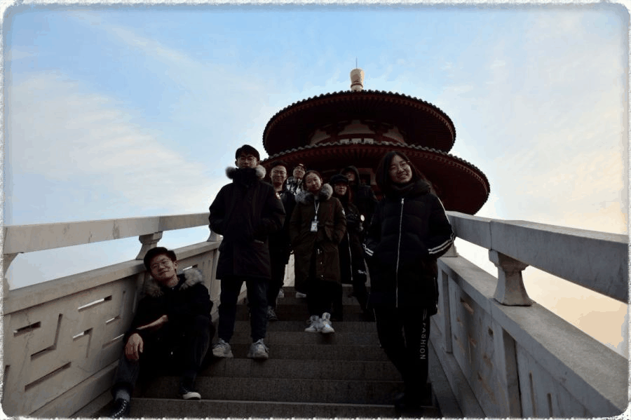
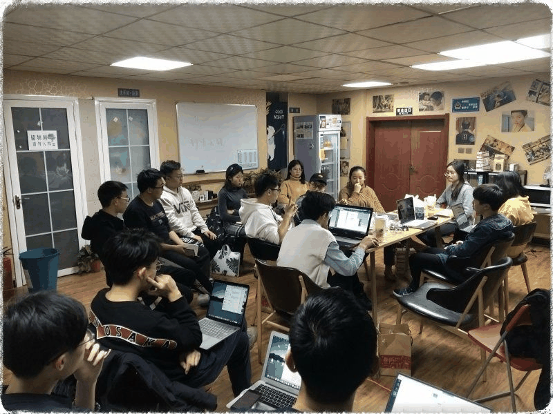
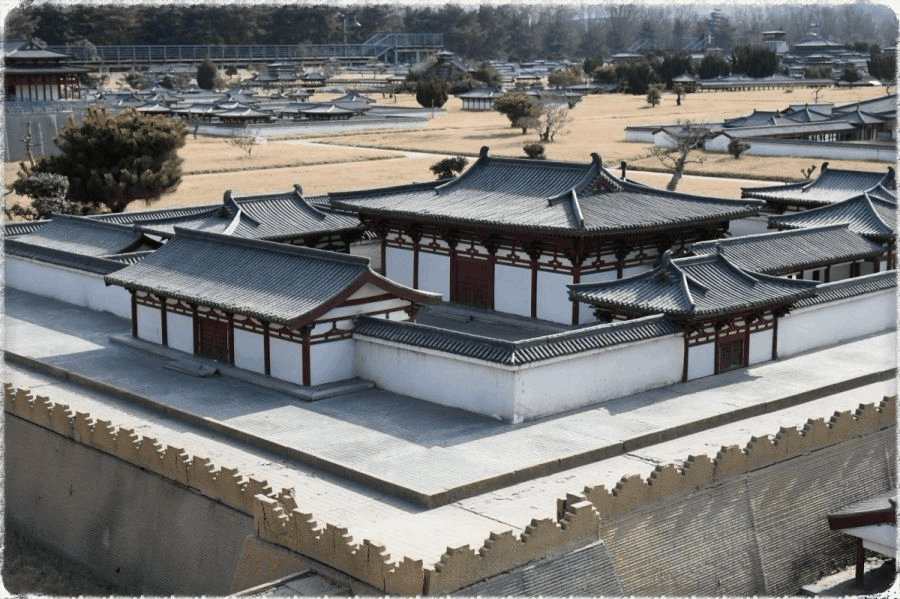

【秦简拓语·十四】且听风吟，且行无疆
从去年四月到现在，与行者的相遇，已经走过了十个月的春夏秋冬。行者无疆仿佛已经成为了自己生活的一部分，成为了流淌在心中的血脉。那些可爱的人儿，那些一起走过的路，那些时光承载的欢笑与感动，那些共度的风霜雨雪……能够结识热情真诚、志同道合的你们，是属于这个冬天最大的幸运。


调研组工作所付出的努力很多时候是不为人知的。对于理工科学生的我们来说想要写出学术性的历史学考古学文段谈何容易。每一次撰写调研材料都要查阅无数文献，总结无数资料。在这个过程中，自己真的学到了很多，从一开始的一无所知，到逐渐了解渐入佳境，感谢在这里学到的一切。
当初跟队长说这次的调研报告我想尝试一些大的改变，我决心要让我们的报告有更加细致具体的结构划分、更加严谨辨证的语言形式。但是究竟如何改变，我的内心其实是一片茫然、毫无头绪的。但就在实践期间每天晚上的开会中，从大家集思广益、鞭辟入里的分析和讨论中，一张崭新的蓝图在我眼前铺展开来，前进的方向逐渐明朗，思维的火花在这间狭小的民宿中交汇碰撞。这便是我所期望的团队——各抒己见、和而不同，每个人都有自己的理解和思考。自己在其中也是收获满满。

阿房宫、大明宫、大唐芙蓉园三处遗址的调研尤其让我印象深刻。虽都是遗址，保护方式却千差万别。从阿房宫的单一限制性保护，到大明宫的遗址公园形式保护，再到大唐芙蓉园的商业性主题景区。人为的重建再开发程度在递增，遗址的原真性在缩减。如阿房宫遗址般什么都不做的限制性保护固然能最大限度地保存深埋于地下的阿房宫遗址，却造成了遗址保护与区域经济发展民生改善之间的矛盾，遗址区内低矮破败的小巷与保护区外现代化发展的步伐格格不入，也使古迹失去了生命活力，更因此失去了实现进一步活态展示、发挥文化属性和公众效应的机会。而如同大唐芙蓉园的商业化主题公园纵然华丽壮观、气势恢宏，却已与史书中记载的芙蓉园相去甚远。商业化的布局和过度的装饰性装潢，使得芙蓉园难以呈现其所承载的历史意义。如果开发者只是将芙蓉园这一名称作为景区营销的噱头，而让其失去了文化的内核，纵然建筑如何别致精巧，也终究沦为流量时代的消费品。

还历史以真实，还生命以过程。平衡好原生基址保护与公众活态展示之间的矛盾，把握好文物古迹保护与修缮的限度，针对不同情况因地制宜选择恰当保护方式，才是改善古迹保护现状的必由之路。
八天，十四处地点，十九位行者，同一卷故事。在那座古香古色的西部小城里，和最好的行者共同走过大街小巷，和最优秀的朋友寻觅最美的文化。八天的行程，我们用了几个月去走；行者这本书，够翻很多年。且听风吟，且行无疆。行者的故事没有结束，我们的征程仍在继续。
来源丨行者无疆实践团
文字丨宋清风
排版丨邓子孚
审核丨潘雯雯 邓子孚
行者无疆实践团
QQ：2758025831
随行者一起认识世界
长按二维码关注